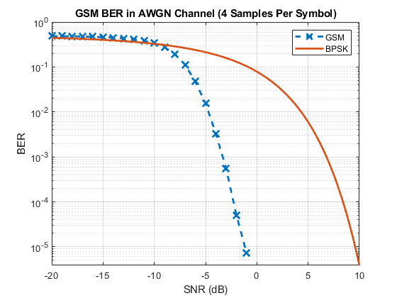

clear; clc; close all;
iter = 1e1;
SNRdB = -20:1:0;
N = 400;
trellis = poly2trellis([5],[23,33]);
convEncoder = comm.ConvolutionalEncoder(trellis);
convEncoder.PuncturePatternSource = 'Property';
convEncoder.PuncturePattern = 1*(mod((0:487)'-11,15) > 0);
vitDecoder = comm.ViterbiDecoder(trellis,'InputFormat','Hard');
vitDecoder.PuncturePatternSource = 'Property';
vitDecoder.PuncturePattern = convEncoder.PuncturePattern;
vitDecoder.TracebackDepth = 224;
vitDecoder.TerminationMethod = 'Terminated';
diffDecoder = comm.DifferentialEncoder();
sps = 4;
pLen = 4;
gmskMod = comm.GMSKModulator('BitInput',true,'PulseLength',pLen,...
'SamplesPerSymbol',sps,'InitialPhaseOffset',pi/4);
gmskDem = comm.GMSKDemodulator('BitOutput',true,'PulseLength',pLen,...
'SamplesPerSymbol',sps,'InitialPhaseOffset',pi/4);
k = (0:455)';
bitLoc = mod(k,19) + 19*mod(k,6) + 1;
const = mod(k,19) + floor(k/114) + 1;
ts = 4*N+18;
tailBits = zeros(3,ts);
midBits = zeros(28,ts);
guardbits = ones(8,ts);
BERind = nan(iter,length(SNRdB));
bar = waitbar(0,'Progress');
for ii = 1:iter
data = randi([0,1],240,N);
info = [data;zeros(4,N)];
enc = nan(456,N);
for jj = 1:N
enc(:,jj) = convEncoder(info(:,jj));
end
inter = zeros(114,ts);
for jj = 1:N
burstLoc = 4*(jj-1) + const;
for kk = 1:456
inter(bitLoc(kk),burstLoc(kk)) = enc(kk,jj);
end
end
formatted = vertcat(tailBits,inter(1:57,:),midBits,inter(58:end,:),...
tailBits,guardbits);
form1 = [formatted(:);zeros(gmskDem.TracebackDepth,1)];
diffEnc = xor(form1,[0;form1(1:(end-1))]);
sent = gmskMod(diffEnc);
for jj = 1:length(SNRdB)
awgnChan = comm.AWGNChannel('NoiseMethod','Signal to noise ratio (SNR)',...
'SNR',SNRdB(jj));
noisy = awgnChan(sent);
rec1 = gmskDem(noisy);
rec = rec1((gmskDem.TracebackDepth+1):end);
diffDec = diffDecoder(rec);
unform1 = reshape(diffDec,156,[]);
unformatted = vertcat(unform1(4:60,:),unform1(89:145,:));
Ndetec = (size(unformatted,2)-18)/4;
deInt = nan(456,Ndetec);
for kk = 1:Ndetec
burstLoc = 4*(kk-1) + const;
for mm = 1:456
deInt(mm,kk) = unformatted(bitLoc(mm),burstLoc(mm));
end
end
dec = nan(244,Ndetec);
for kk = 1:Ndetec
dec(:,kk) = vitDecoder(deInt(:,kk));
end
dec1 = dec(1:240,:);
BERind(ii,jj) = sum(sum(dec1 ~= data))/(240*N);
vitDecoder.reset();
gmskDem.reset();
diffDecoder.reset();
waitbar(((ii-1)*length(SNRdB) + jj)/(iter*length(SNRdB)),bar)
end
gmskMod.reset();
convEncoder.reset();
end
close(bar)
BER = mean(BERind,1);
SNRdBth = linspace(SNRdB(1),10,100);
SNRth = 10.^(SNRdBth/10);
bpskBERth = qfunc(sqrt(2*SNRth));
figure
semilogy(SNRdB,BER,'--x','Linewidth',2,'Markersize',10)
hold on
semilogy(SNRdBth,bpskBERth,'Linewidth',2)
ylim([bpskBERth(end),1])
title(['GSM BER in AWGN Channel (',num2str(sps,0),' Samples Per Symbol)'])
xlabel('SNR (dB)')
ylabel('BER')
legend('GSM','BPSK')
grid on
